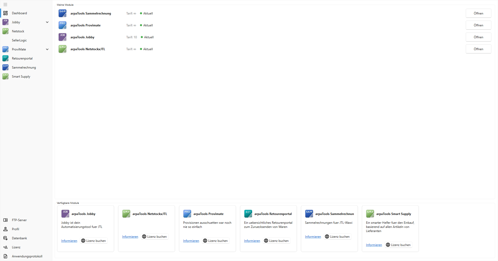
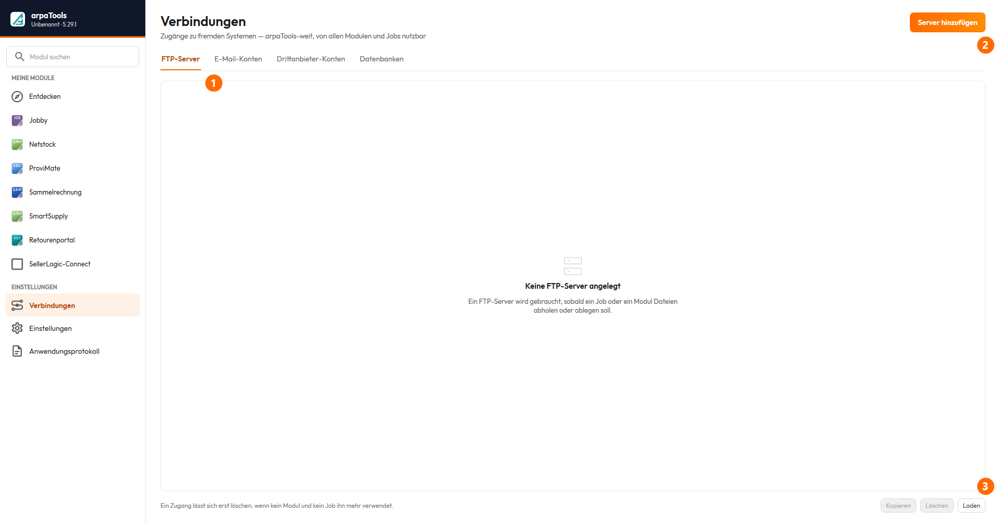

Grundlagen und Einrichtung
ArpaTools Kern
Auf dieser Seite
Einleitung
arpaTools ist eine Windows-Anwendung, die Ihre JTL-Wawi mit externen Diensten und Marktplätzen verbindet. Statt einer einzelnen Anwendung erhalten Sie einen Client, in dem einzelne Apps (Module) einzeln lizenziert und geöffnet werden, zum Beispiel Jobby, Sammelrechnung, ProviMate, Retourenportal, Netstock, SellerLogic oder SmartSupply. Jede App hat ihre eigene Dokumentation; dieser Text beschreibt, was allen gemeinsam ist: Programmstart, Profile, Datenbankverbindung, Lizenz und die Grundeinstellungen.
Systemvoraussetzungen
arpaTools läuft unter Windows und benötigt die .NET Desktop Runtime 10.0 von Microsoft. Diese ist auf vielen Rechnern bereits vorhanden. Fehlt sie, meldet das Setup das beim Installieren und bietet Ihnen an, die Downloadseite direkt zu öffnen. Installieren Sie die Runtime dann und starten Sie das Setup erneut.
Auf der Downloadseite https://dotnet.microsoft.com/download/dotnet/10.0 stehen mehrere Pakete nebeneinander. Sie brauchen .NET Desktop Runtime, in der Regel die Ausgabe für x64. Die daneben angebotene „.NET Runtime" allein genügt nicht.
Sie brauchen die Runtime einmal je Rechner, nicht bei jedem Update von arpaTools.
Erstmaliger Start
Beim ersten Start zeigt arpaTools die Endbenutzer-Lizenzvereinbarung (EULA). Erst wenn Sie die Checkbox Ich akzeptiere die Nutzungsbedingungen setzen und speichern, lässt sich arpaTools nutzen.
Sind auf Ihrem Rechner mehrere Profile eingerichtet, fragt arpaTools beim Start, mit welchem Profil Sie arbeiten möchten. Ein Profil bündelt Datenbankverbindung, Lizenz und alle Einstellungen; mit nur einem Profil entfällt diese Abfrage und arpaTools startet direkt damit.
Startseite
Nach dem Start zeigt arpaTools die Startseite mit zwei Bereichen:
- Meine Module: die für Ihr Profil lizenzierten Apps, mit Tarif und Lizenzstatus (z. B. „Aktuell"). Über den Knopf Öffnen wechseln Sie in die App.
- Verfügbare Module: Apps, die Sie noch nicht lizenziert haben, mit einer kurzen Beschreibung. Informieren und Lizenz buchen öffnen die passende Seite zur App auf arpatools.com in Ihrem Browser.

Links steht die Seitenleiste mit allen lizenzierten Apps; Apps mit mehreren Bereichen (z. B. Jobby, ProviMate) lassen sich dort aufklappen. Unten in der Seitenleiste liegen die app-übergreifenden Einstellungen: FTP-Server, Profil, Datenbank, Lizenz, Einstellungen und Anwendungsprotokoll - dazu die Links Änderungsverlauf und Download.
Profile verwalten
Über Profil in der Seitenleiste öffnen Sie die Profilverwaltung. Sie zeigt alle auf diesem Rechner eingerichteten Profile mit Id und Name.
- Hinzufügen: legt ein neues, leeres Profil an.
- Löschen: entfernt das gewählte Profil unwiderruflich, inklusive seiner Konfiguration.
- Profil wechseln: startet arpaTools neu und meldet es im gewählten Profil an. Ein Wechsel im laufenden Programm ist nicht möglich, deshalb die Bestätigungsfrage und der Neustart. Ein gerade erst angelegtes, aber noch nicht gespeichertes Profil lässt sich nicht direkt anwählen - erst speichern, dann wechseln.
Datenbankverbindung
Über Datenbank in der Seitenleiste hinterlegen Sie die Verbindung zu Ihrer JTL-Wawi-Datenbank: Server, Benutzername, Passwort und die Datenbank selbst. Mit dem Knopf neben dem Datenbankfeld laden Sie die auf dem Server verfügbaren Datenbanken neu, um die richtige aus der Liste zu wählen.
Hinweis für Bildschirmfotos: Dieser Dialog zeigt echte Zugangsdaten. Für eine Doku-Aufnahme vorher mit Beispielwerten befüllen, nicht mit echten.
Lizenz
Über Lizenz in der Seitenleiste hinterlegen Sie die E-Mail-Adresse und den Lizenzschlüssel, mit denen arpaTools Ihre gebuchten Apps beim Lizenzserver prüft. Einzelne Apps zusätzlich buchen können Sie direkt über die Kacheln im Bereich Verfügbare Module auf der Startseite.
Nutzungskennzahlen
Bei jeder Lizenzprüfung übermittelt arpaTools zusätzlich Nutzungskennzahlen aus Ihren Apps: wie viele Jobs, Provisionsregeln oder ähnliche Datensätze angelegt sind, wie oft sie zuletzt genutzt wurden, und welche Einstellungen Sie aktiviert haben. Diese Zahlen zeigen uns, welche Funktionen tatsächlich gebraucht werden, und fließen in die Weiterentwicklung von arpaTools ein. Die Übermittlung erfolgt höchstens einmal täglich je Profil, zusammen mit der Lizenzprüfung. Übertragen werden ausschließlich Zahlen und Zeitpunkte - niemals Job-, Kunden-, Artikel- oder Regelnamen oder sonstige Inhalte aus Ihren Daten.
Einstellungen und Anwendungsprotokoll
Über Einstellungen in der Seitenleiste legen Sie die Protokollierungsstufe fest, also wie ausführlich arpaTools mitschreibt. Von dort öffnen Sie mit einem Knopf direkt das Anwendungsprotokoll, dieselbe Ansicht wie unter dem gleichnamigen Seitenleisten-Eintrag. Dort finden Sie den Verlauf der Programmereignisse, hilfreich bei der Fehlersuche gemeinsam mit dem Support.
Hinweis für Bildschirmfotos: Protokollzeilen können Servernamen, Benutzernamen oder andere Betriebsdetails im Klartext enthalten. Vor einer Aufnahme den Inhalt prüfen, nicht ungesehen übernehmen.
FTP-Zugang anlegen
Einige Apps tauschen Dateien über einen FTP-Server aus, zum Beispiel Netstock, das Retourenportal oder ein Jobby-Job, der die Bestandsliste eines Lieferanten abholt. Den Zugang dazu legen Sie einmal zentral unter Verbindungen an. Danach steht er jeder App und jedem Job zur Auswahl, und Sie wählen ihn dort nur noch aus.
Halten Sie dafür die Zugangsdaten bereit, die Sie vom Betreiber des Servers bekommen haben: Server, Port, Benutzername, Passwort und die Angabe, ob FTP oder SFTP verwendet wird. Für Netstock erhalten Sie diese Daten von Netstock.

- Klicken Sie unten in der Seitenleiste auf Verbindungen. Der Bildschirm öffnet sich mit der Registerkarte FTP-Server ①.
- Klicken Sie oben rechts auf Server hinzufügen ②. Rechts öffnet sich der Bereich Serverdaten.
- Füllen Sie die Felder aus:
- Bezeichnung: ein Name, an dem Sie den Zugang später wiedererkennen, etwa „Netstock". Unter diesem Namen erscheint er in den Auswahllisten der Apps und Jobs. Vergeben Sie jeden Namen nur einmal, sonst lassen sich zwei Zugänge in der Auswahl nicht auseinanderhalten.
- Protokoll: FTP - File Transfer Protocol oder SFTP - SSH File Transfer Protocol, so wie es Ihnen der Betreiber genannt hat. Ein neuer Zugang steht auf FTP.
- Server: nur der Name oder die Adresse des Servers, zum Beispiel
ftp.example.com, ohne vorangestelltesftp://odersftp://. - Port: der Port aus Ihren Zugangsdaten. Das Feld steht bei einem neuen Zugang auf 0 und passt sich nicht von selbst an das Protokoll an. Üblich sind 21 für FTP und 22 für SFTP.
- Benutzername und Passwort: aus Ihren Zugangsdaten.
- Relativer Pfad: optional ein Unterverzeichnis auf dem Server. Meist bleibt das Feld leer, denn ein Job kann den Pfad je Aktion selbst angeben.
- Klicken Sie auf Prüfen. arpaTools meldet sich mit den eingetragenen Werten am Server an, auch wenn sie noch nicht gespeichert sind. Klappt es, erscheint „Verbindung zum FTP-Server erfolgreich." Andernfalls nennt die Meldung den Grund, etwa eine abgelehnte Anmeldung (dann Benutzername und Passwort prüfen), einen Server, der über den angegebenen Port nicht erreichbar ist, oder ein Verzeichnis, das es auf dem Server nicht gibt. Darunter steht die Meldung des Servers im Wortlaut, die hilft, falls Sie beim Betreiber nachfragen.
- Klicken Sie auf Speichern. Der Bereich schließt sich, und der neue Zugang steht markiert in der Liste.
Prüfen und Speichern lassen sich erst anklicken, wenn Bezeichnung, Server, Benutzername und Passwort ausgefüllt sind. Abbrechen verwirft die Eingaben.
Aufnahmeskript öffnet bisher nur eigene Fenster, keinen Bereich innerhalb des Bildschirms.
Die Liste zeigt je Zugang Bezeichnung, Adresse und unter Verwendet von, welche Jobs und Apps ihn nutzen. Über den Stift am Zeilenende bearbeiten Sie einen Zugang, Laden ③ liest die Liste neu ein. Löschen lässt sich ein Zugang erst, wenn kein Modul und kein Job ihn mehr verwendet.
Den Zugang verwenden. Mit dem Speichern ist der Zugang angelegt, aber noch mit nichts verknüpft. Wählen Sie ihn anschließend dort aus, wo er gebraucht wird, zum Beispiel in den Netstock-Einstellungen unter FTP-Server (siehe Netstock-Dokumentation) oder in einer Jobby-Aktion wie Download von FTP-Server (siehe Jobby-Dokumentation).
Änderungsverlauf und Download
Über die Links Änderungsverlauf und Download am unteren Rand der Seitenleiste öffnen Sie in Ihrem Browser die Übersicht der ausgelieferten Versionen bzw. den Download der aktuellen arpaTools-Version.